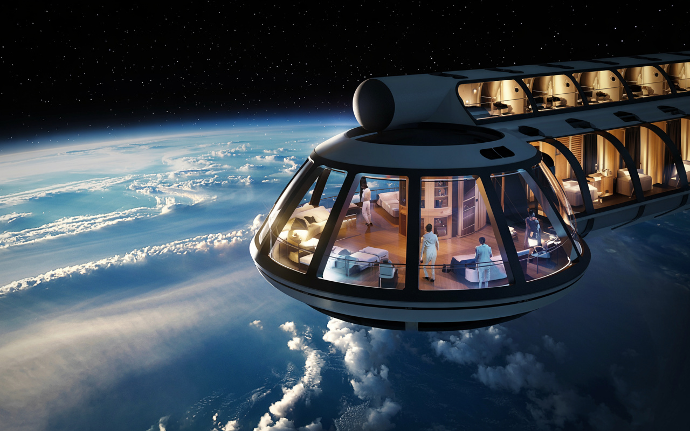
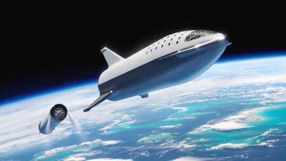
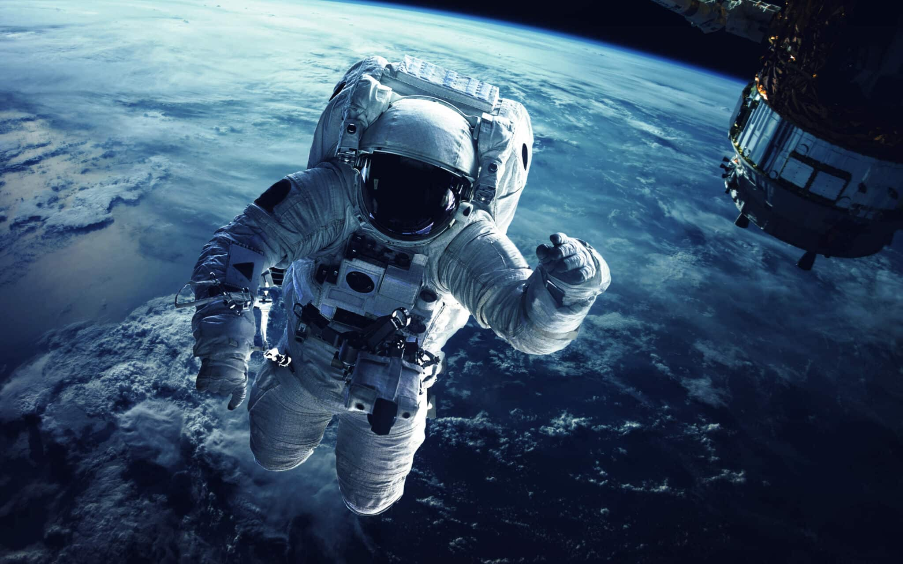

The Dawn of a New Civilization
For millennia, the human race has been bound to the surface of the Earth, looking up at the cosmic ocean with a mixture of fear and wonder. We have charted the stars, named the constellations, and dreamed of walking on other worlds. Today, that dream transforms into reality. Stellar Horizon Tours is not merely a travel agency; we are the architects of humanity's next great leap. By opening the doors of space to civilians, we are taking the first steps toward becoming a multi-planetary species. This is not just about tourism; it is about evolution. Our journey began ten years ago with a simple sketch on a napkin and a team of dedicated engineers who refused to believe that the sky was the limit. Through years of rigorous testing, failures, and breakthroughs, we have developed the safest and most advanced spacecraft in history. When you board our ships, you are not just a passenger; you are a pioneer joining a legacy of explorers that stretches back to the first sailors who crossed the oceans.

Starlight Suites: Luxury in the Void
Imagine a hotel room where the view changes every second. At the Starlight Orbital Hotel, we have redefined the concept of luxury. Located 400 kilometers above the surface, our hotel orbits the Earth every 90 minutes, giving you the chance to witness sixteen sunrises and sixteen sunsets in a single day. The structure is built from cutting-edge composite materials designed to shield you from cosmic radiation while providing crystal-clear views through our panoramic observation decks. Inside, gravity is a choice, not a law. Our rotating habitat ring simulates one-sixth of Earth's gravity—similar to the Moon—allowing you to walk comfortably, dine elegantly, and sleep soundly. However, simply step into the central core, and you can experience true weightlessness. Float through the air like a superhero, perform acrobatics that would be impossible on Earth, and drink water floating in mid-air spheres.

Engineering Unmatched Safety
Space travel is an inherently dangerous endeavor, which is why safety is the absolute cornerstone of our philosophy. Every single bolt, sensor, and window on our spacecraft has been tested millions of times under the most extreme conditions imaginable. Our team consists of former NASA engineers, veteran Air Force pilots, and leading astrophysicists who monitor every second of the flight from our Mission Control Center. We utilize a "Triple Redundancy" system for all critical components. This means that if a primary computer fails, a backup takes over instantly. If the backup fails, a third system is ready to intervene. Furthermore, our escape launch system can pull the crew capsule away from the rocket in milliseconds if any anomaly is detected during ascent. We fly only when every single parameter is perfect because your life is our most precious cargo.

Prepare Like an Astronaut
Before you leave the atmosphere, you will undergo a transformation. Stellar Horizon Tours operates the world's most advanced private astronaut training facility in the Nevada desert. This is not just a gym; it is a blend of a high-tech university and a luxury resort. Your training will include centrifuge simulations to help you get used to the feeling of high G-forces during launch and re-entry. You will also experience underwater spacewalk training in our neutral buoyancy lab, replicating the feeling of floating in the vacuum of space. Our team of psychologists and mission specialists will guide you through every step, ensuring that when the countdown reaches zero, you are calm, confident, and ready to enjoy the ride of a lifetime.
